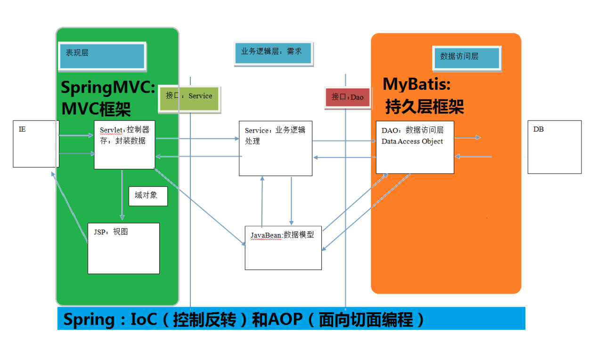
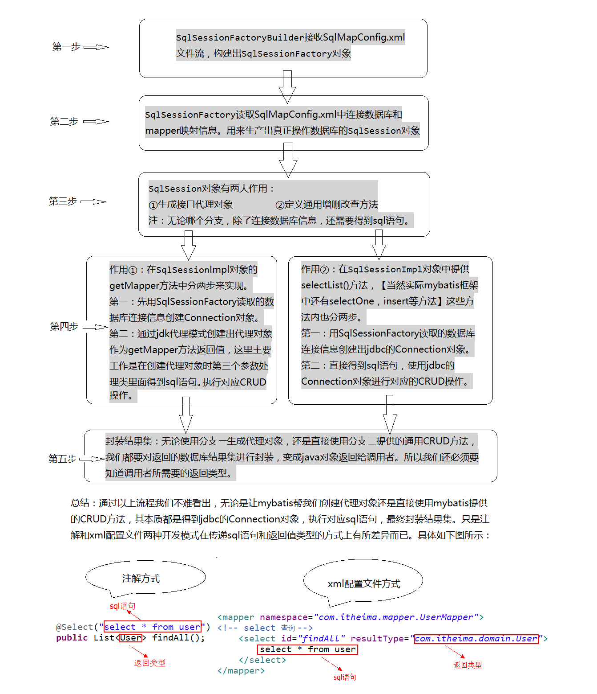
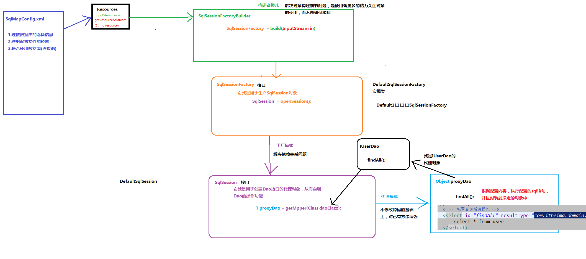

1、什么是框架？
框架就是软件开发中的一套解决方案，它可以封装很多细节，方便开发
2、SSM（Spring+SpringMVC+Mybatis）框架三层架构
表现层：用于展示数据
业务层：编写业务逻辑，处理业务需求
持久层：与数据库交互

3、持久层技术解决方案
JDBC技术：
Connection
PreparedStatement
ResultSet
Spring的JdbcTemplate：
Spring中对jdbc的简单封装
Apache的DBUtils：
和Spring类似，也是对jdbc的简单封装
以上这些都不是框架
JDBC是规范
Spring的JdbcTemplate和Apache的DBUtils都只是工具类，因为在使用它们的过程中还需要编写很多与实际功能不想相关的代码，即封装性不够完好
4、mybatis的概述
一个基于java的持久层框架，它内部封装了jdbc，使用ORM（Object Relational Mapping）思想实现了结果集的封装。
ORM解释：
把数据库表和实体类及实体类的属性对应起来，操作实体类就相当于直接操作数据库表
Mybatis内部机制简述：
mybatis通过xml或注解的方式将要执行的各种statement配置起来，并通过java对象和statement中sql的动态参数进行映射生成最终执行的sql语句，最后由mybatis框架执行sql并将结果映射为java对象返回
5、mybatis的环境搭建
1.创建maven工程并导入坐标
2.创建实体类和dao的接口
3.创建Mybatis的主配置文件SqlMapConfig.xml
4.创建映射配置文件IUserDao.xml
环境搭建的注意事项：
1.创建IUserDao.xml和IUserDao.java时名称是为了和之前保持一致，在Mybatis中持久层的操作接口接口名称和映射文件也叫做：Mapper
即：IUserDao和IUserMapper是一样的
2.mybatis的映射配置文件位置必须和dao接口的包结构相同

3.映射配置文件的mapper表桥namespace属性的取值必须是dao接口的全限定类名
4.映射配置文件的操作配置，id属性的取值必须是dao接口的方法名
<?xml version="1.0" encoding="UTF-8"?>
<!DOCTYPE mapper
PUBLIC "-//mybatis.org//DTD Mapper 3.0//EN"
"http://mybatis.org/dtd/mybatis-3-mapper.dtd">
<mapper namespace="com.itheima.dao.IUserDao">
<!-- 配置查询所有操作 -->
<select resultType="com.itheima.domain.User">
select * from user
</select>
</mapper>
mybatis入门案例
mybatis基于xml的入门案例：
第一步：读取配置文件
第二步：创建SqlSessionFactory工厂
第三步：创建SqlSession
第四步：创建Dao接口的代理对象
第五步：执行dao中的方法
第六步：释放资源
注意事项：
不要忘记在映射配置中告知mybatis要封装到哪个实体类中
配置的方式：指定实体类的全限定类名
项目结构：

主配置文件：
配置driver的优先级： build > app.properties > <propertie>

持久层接口的映射文件：

测试类：

mybatis基于注解的入门案例：
把IUserDao.xml移除，在dao接口的方法上使用@Select注解，并且在指定SQL语句
在SqlMapConfig.xml中Map配置时，使用class属性指定dao接口的全限定类名
项目结构：

主配置文件：

dao接口：

测试类和基于xml的一样
mybatis编写dao实现类的入门案例：
上面两种方法中，mybatis根据xml和注解来自动创建了Dao接口的代理对象，当然Mybatis也支持写Dao实现类
项目结构：

配置文件和基于xml的一样
Dao实现类：

测试类：

实际开发过程中，都是采用前两种方法
入门案例的分析：
public static void main(String[] args) throws IOException {
//1.读取配置文件
读取配置文件时，绝路路径和相对路径一般都不使用
一般使用下面两种方式：
第一种：使用类加载器，只能读取类路径的配置文件
第二种：使用ServletContext对象的getRealPath()
InputStream in = Resources.getResourceAsStream("SqlMapConfig.xml");
//2.创建SqlSessionFactory工厂
mybatis使用构建者模式来创建工厂
优势：
把创建对象细节隐藏，使用者可以直接调用方法即可拿到对象
SqlSessionFactoryBuilder builder = new SqlSessionFactoryBuilder();
SqlSessionFactory factory = builder.build(in);
//3.使用工厂生产SqlSession对象
生产SqlSession使用了工厂模式
优势：
解耦（降低类之间的依赖关系）
SqlSession session = factory.openSession();
//4.使用SqlSession创建Dao接口的代理对象
创建Dao接口实现类使用了代理模式
优势：
不修改源码基础上对已有方法增强
IUserDao userDao = session.getMapper(IUserDao.class);
//5.使用代理对象执行方法
List<User> users = userDao.findAll();
for(User user:users){
System.out.println(user);
}
//6.释放资源
session.close();
in.close();
}
自定义mybatis的分析：

分为两个部分：
1、创建代理对象
2、调用代理对象的selectList方法
